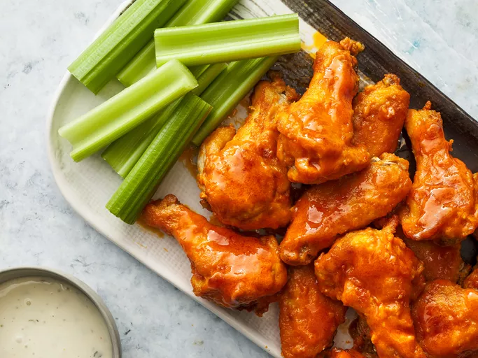

Buffalo Wings

Classic Hot Buffalo Wings
Hot Delicious Buffalo Wings!
Homemade Buffalo Wings have a secret ingredient that makes them super crisp and
irresistible. The easy buffalo sauce is just 3 ingredients and makes these taste
like a restaurant-quality appetizer.
Ingredients:
- Frozen Chicken Wings
- Baking Powder
- Salt
- Garlic Powder
- Frank's Original Red Hot Sauce
Steps:
- Prep chicken wings
- Make seasoning
- Season the wings
- Bake for 50 minutes
- Toss wings in sauce